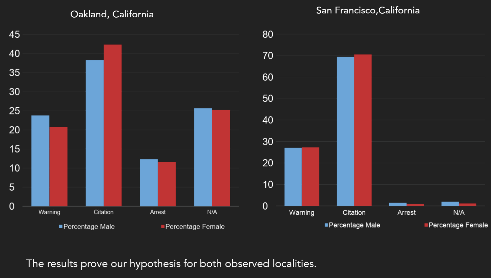
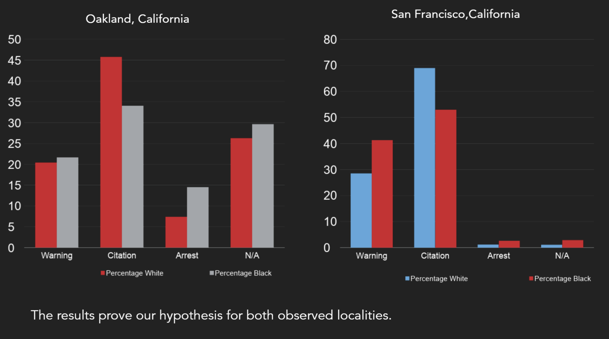

CS 208 Programming Languages
Standford gathers data for millions of traffic stops by law enforcement agencies across the US. The goal of the project was to work in teams of 2 ,and investigate the interactions between police and the public. The project was executed using Ruby, Microsoft Visual Studio, and Tableau Public for graphs. The goal of the project was to create two hypotheses and using the data, carry out the analysis to see if the results match the hypothesis.
First Question
Are women more likely to be cited than men for traffic violations?
Motivation: Coming from countries where drivers are predominantly male, we wanted to see if traffic laws are enforced somewhat ‘fairly’, and that there is not a skew towards female identifying drivers which might suggest an implicit bias on the authorities’ part.
Hypothesis: We hypothesize that women will have faced a proportionally equal amount of traffic violations as males. This is based on our motivation for the question and the degree of progressiveness of women’s rights in the U.S.
Results-

Question-2
Are black youngsters age less than 25 more likely to be reprimanded (citations + warnings + arrests) for traffic violations than White youngsters?
Motivation: Having observed the complex political and social situation of the U.S and we want to see if there is indeed a bias against Black youngsters here as this is something we are personally invested in as both BIPOC and people who care about diversity, equity, and inclusion. We picked Black youngsters specifically as this seems to be the group the authorities are most biased against based on our observations of recent events within the U.S.
Hypothesis: We hypothesize that Black youngsters will have faced more traffic violations than White youngsters. This is based on our motivation for the question.
Results-
